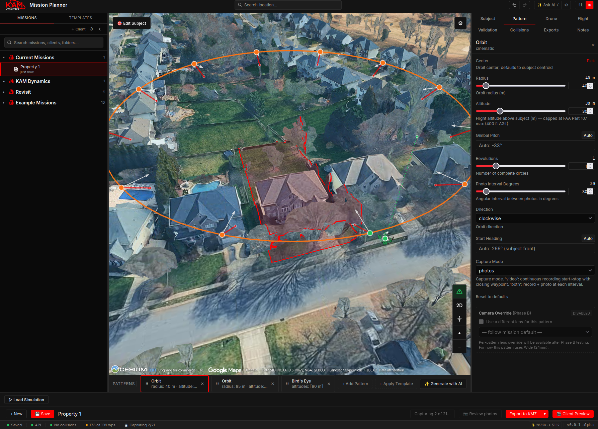
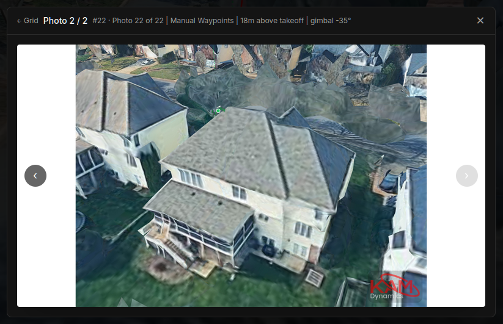
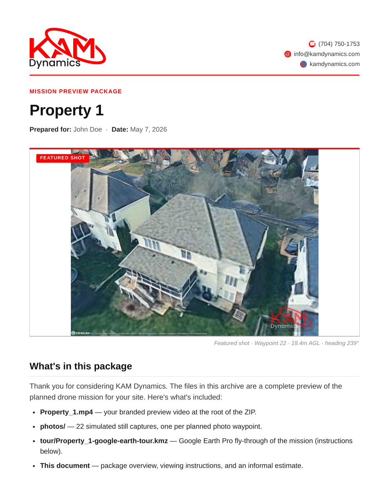

FAA Part 107 aerial coverage for Charlotte-area real estate. Every shot framed, previewed, and approved before flight day.
FAA Part 107 commercial drone work based in Charlotte. Every shoot is insured and flown to a documented checklist, then delivered as color-graded, listing-ready video and stills.
Most operators send a quote and hope for the best. We send a quote and a photorealistic preview of the planned shoot, so you can approve the angles, altitudes, and framing before flight day.



We check airspace, parcel boundaries, neighborhood elevation, and FAA compliance before we quote a price.
We plan the mission in custom software we built in-house, framing every shot for angle, altitude, coverage, and sequence.
You receive a photorealistic render of the shoot before flight day. Approve the framing or send notes, and we revise until it's right.
FAA Part 107, documented checklist, fully insured for every shoot. The drone executes the plan you already approved.
Your agreed-upon deliverables, professionally edited and color-graded, ready to list. Fast turnaround on every shoot, with rush delivery available.
The capture is only half the work. Every image is professionally edited and color-graded to a clean, listing-ready finish — and for the listings that deserve a showpiece, we offer dramatic twilight shots that stop the scroll.
I've spent the last couple of decades in enterprise technology, architecting cloud-native platforms for large engineering teams. After earning my FAA Part 107 commercial certification, I built KAM Dynamics to bring that same discipline to the air.
That means every shoot is planned in advance, flown against a checklist, and delivered the same way every time — no surprises on your end. I even wrote my own mission-planning software so you can preview the shoot before approving the bid, because hiring a drone pilot shouldn't be a gamble on whoever shows up.
Cloud architecture engagements run separately at khary.net ↗
Need eyes on a roof, monthly progress on a build, or aerial content for social? It's the same flight-planned, professionally edited workflow, pointed somewhere new.